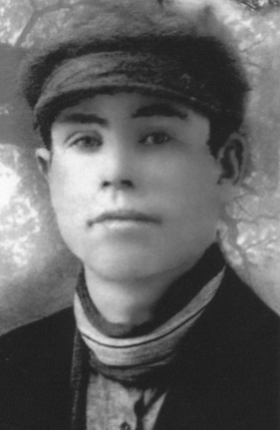
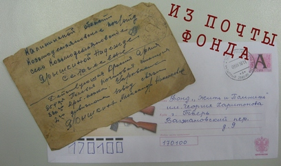
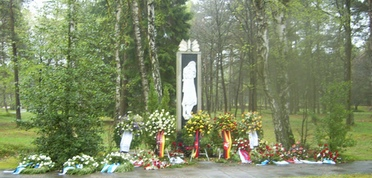

декабрь 2010 года
ГЕРОЙ ЗЕМЛИ ТВЕРСКОЙ
(Окончание. Начало на странице 2.)
Потом были Якутия, море Лаптевых, перегрузка на баржи пришедших по Северному морскому пути пароходов. Потом - Верхоянск. Оттуда-то по совету товарищей и написал бывший геройский танкист письмо своим сослуживцам в Кантемировскую дивизию и другое письмо - бывшему фронтовому командиру корпуса, а в то время уже депутату Верховного Совета и маршалу бронетанковых войск Павлу Павловичу Полубоярову. С просьбой помочь пересмотреть, наконец, его дело, разобраться - ведь за проступок свой он давно уже отработал с лихвой.
Быстро письма пишутся, а дело медленно делается, особенно такое дело. Но ходатайства кантемировцев и Полубоярова возымели - таки свое действие, и примерно через год, оттрубив в общей сложности в лагерях шестнадцать лет и два месяца, вернулся Николай Тимофеевич в тверские места. Не фронтовиком уже, не геройским молодым парнем, а худым сорокалетним почти мужиком, над которым витало пугающее слово «сидел», молчуном таким, что за день слова не вытащишь.
И если вернуться в родные места было теперь вроде и несложно - вернуться в жизнь, настоящую, полноценную, новую уже жизнь, бывшему Герою и зеку оказалось куда сложнее. Впрочем, бывшим Героем Александров себя не считал, хорошо понимая, что не бывает героев бывших. Он и жене потом скажет: «Если вернуть не успею, когда помру - повесь на памятник фотографию со звездой...»
А с женой вот как вышло. Жил Николай Тимофеевич у своей сестры в деревне Выползово Бологовского района, А по соседству жила Анна Васильевна, еле перебиваясь одна с тремя малыми детьми. И ожило так и не ожесточившееся русское сердце: стала Анна Васильевна его первой и единственной любовью, а дети ее - его детьми. Поднимал он их, как отец, на ноги, зарабатывая, где придется: рабочим в лесхозе или на пилораме, слесарем, плотником, кочегаром. За ветерана войны его местные власти не считали, и не имел он от них никаких, даже малых, положенных ему по чести и совести льгот. Но с некоторых пор начал писать письма верховным властям с просьбой возвратить ему геройское звание и положенные фронтовику права. А властям у нас вечно некогда - то хоронят вождей, то перестройку затеют, то переворот - до простого ли человека? Вот и жили Александровы трудно, безденежно, но детей в люди вывели.
А потом пришло нежданное уже правительственное письмо. В нем сообщалось, что Указом Президента Российской Федерации от 1 ноября 1994 года Александров Николай Тимофеевич восстанавливается в правах на звание Героя Советского Союза и ему пересылаются орден Ленина и медаль «Золотая Звезда» с соответствующими документами. Так он второй раз возвратился с войны...
После выхода на пенсию все чаще стали напоминать о себе фронтовые контузии и ранения, лагерная жизнь: перенес несколько инсультов, ампутировали ногу. Умер Николай Тимофеевич 22 июля 2001 года, похоронен на гражданском кладбище в поселке Выползово Бологовского района. До последнего дня он вместе с Анной Васильевной жил в простом одноэтажном на две семьи доме. На нем сейчас памятная доска. И одна из улиц в ЗАТО Озерный носит его имя.
Все, кому приходилось бывать в семье Героя, наверняка запомнили часто повторяемую им фразу: «Не надо делать из нас героев, мы простые люди, мы как все».
Вечная память Герою, солдату Великой Отечественной нашему земляку АЛЕКСАНДРОВУ Николаю Тимофеевичу и вечной памяти о нем всем нам, кого он защитил в те роковые годы! |

Память - наша история
Моего отца Скоморохова Семёна Ивановича призвали на фронт в первые дни Великой Отечественной войны. С фронта он не вернулся как пропавший без вести. Мне шёл тогда одиннадцатый год, но только спустя 69 лет я узнала, где он погиб. Случайно моя семья познакомилась с человеком, который служил после войны на Тихоокеанском флоте - Скрипченко Николаем. Они вместе с тверской организацией «Жить и Помнить» начали поиск с нуля. Удалось установить, что краснофлотец 83 отдельной стрелковой бригады морской пехоты (ОСБМП) Скоморохов С.И. погиб в бою 7 октября 1942 года на высоте 184,1. Где находится эта высота, выяснить не удавалось, военкоматы молчали. И только благодаря работникам Абинского краеведческого музея Краснодарского края мы узнали, где это место. Только за один день боев 7 октября 1942 года на этой высоте погибли 29 человек краснофлотцев 83 ОСБМП Черноморского Флота. Погибли в неравном бою, погибли как герои, что подтверждают документы Центрального архива МО РФ.
Несмотря на свой возраст, я вместе с сыном Станиславом в день гибели отца и его товарищей 7 октября побывала на этом месте и поклонились ему и всем, кто вместе с ним сражался здесь за свободу и независимость нашей Родины и пал в боях. Мы бесконечно благодарны директору Абинского музея Ирине Владимировне Ерёменко и её мужу Александру Васильевичу за гостеприимство и организацию нашего пребывания в Абинске и в горах. Добрые они люди. Спасибо Вам, Ирина Владимировна. На таких как Вы держится Русская земля, здоровья Вам и успехов. Вы очень нужны всем нам. Они всё организовали как для самых дорогих и близких, всё было сделано и в части жилья, обеспечения автотранспортом, и встречи с людьми моего поколения. Мы еще раз вспомнили военные годы, когда все мы были объединены как одна семья, помогали друг другу, делились всем, что было у каждого.
В горах, с высоты 184,1 хорошо просматривалась местность внизу, а маяком на ней стоит старый свидетель-дуб. Говорят, ему более 200 лет и он видел все эти тяжелейшие бои с фашистами и их сателлитами за каждый метр земли русской. Бои часто переходили в рукопашную. На месте гибели героев - моряков нет ни памятников, ни других знаков. Оставшиеся в живых ветераны 83 ОСБМП издали книгу о боевом пути бригады, фронтовых судьбах своих боевых товарищей, героически сражавшейся в этих местах. Побывав на месте боев, мы установили у дуба фотографию отца и букеты цветов, наплакались по погибшим, взяли немного земли с собой.
Сегодня власти края и Абинского района планируют в 2011 году направить поисковые группы и перезахоронить останки героев или принять другое решение, каким образом увековечить память моряков, отдавших жизни за освобождение Кавказа от фашистов. Бои были настолько сильные, что если высота взята в октябре 1942 года, то Абинск, который находится в 10 километрах, был освобождён только в марте 1943 года.
Мы бесконечно благодарны Президенту фонда «Жить и Помнить» Мусину Л.М., а также руководителю межрегиональной организации «Дети погибших защитников Отечества» Богатырёвой P.A., газете «АиФ в Твери», секретарю фонда Терентьеву A.M. и другим людям, кто нам помогал и помогает в поиске пропавших без вести.
Очень хорошо сказал Герой Советского Союза Владимир Карпов, тот самый смелый и бесстрашный разведчик, а впоследствии летописец войны, что битва за Кавказ пока не оценена по достоинству, и значение её не отражено в должной степени в нашей художественной литературе. С ним я очень и очень согласна и воочию убедилась в этом, побывав на местах боёв морской бригады.
Светлую Память о героях - моряках мы будем хранить вечно, а последующим поколениям также верно беречь и защищать свою Родину.
Т. Некрасова, дочь морского пехотинца Скоморохова С.И.
|
| Солдаты возвращаются, но только не живые, а гранитные
Уважаемые товарищи! Прошу вашей помощи в розыске родных солдат, уроженцев Калининской области, которые до сих пор числятся пропавшими без вести.
В апреле 2010 года учащиеся МОУ СОШ №7 г. Мичуринска Тамбовской области принимали участие совместно с учащимися реальной школы г. Мюнстер (Германия) в увековечивании памяти советских солдат на братском кладбище Хёрстен лагеря Берген-Бельзен (шталаг 311 С). Учащиеся реальной школы изготовили 52 таблички с именами воинов, которые мы вместе заложили на валу кладбища. Среди них табличка с именами ваших земляков: Дрожжина Александра Михайловича, 1918 года рождения, уроженца дер. Ляхово, Пестриковского сельсовета Кашинского района, погиб в лагере 5 октября 1941 года и Иванова Федора Ивановича, 1902 года рождения, уроженца дер. Усадьба Староторопского сельсовета Западнодвинского района, погиб в лагере в октябре 1941 года.
Поисковая группа «Надежда» нашла в Мемориале данные на этих солдат в лазаретных списках лагеря, поэтому в записях могут быть ошибки. Нам бы очень хотелось, чтобы в Книге памяти Тверской области было указано место последнего упокоения воинов, и об этом знали их родные. Мы готовы к общению с родственниками солдат.
О кладбище Хёрстен лагеря Берген - Бельзен могу рассказать следующее. Оно не представляет собой кладбище в нашем русском понимании. У входа стоит камень, на котором написано, что здесь в братских могилах лежат 50 000 умерших советских военнопленных, с надписью: "Спите спокойно, дорогие братья". Само кладбище-это большая территория с деревьями, небольшим валом и четырьмя большими прямоугольниками, засаженные вереском. В них и покоятся останки наших братьев. Отдельных могил на кладбище нет, кроме одной - сын поставил символический памятник отцу.
С уважением,
директор школы Рыбальченко Е.И., г. Мичуринск.
|
|
|